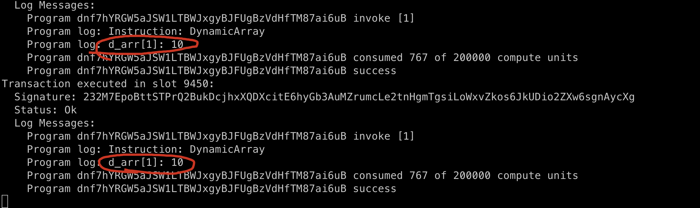
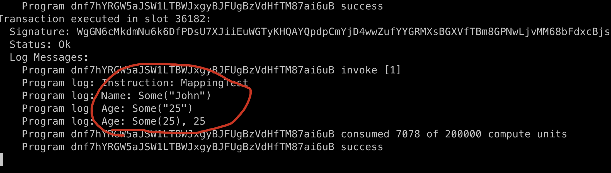
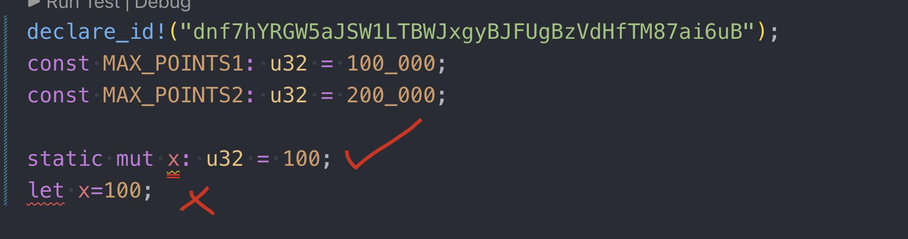

RUST BASIC

new program
create a new program day_6 via command
anchor new day_6
if...else
There are 3 patterns of condition Claue, you can check the comment lines of 1~3.
use anchor_lang::prelude::*;
declare_id!("dnf7hYRGW5aJSW1LTBWJxgyBJFUgBzVdHfTM87ai6uB");
#[program]
pub mod day_6 {
use super::*;
pub fn age_checker(_ctx: Context<Initialize>, age: u64) -> Result<()> {
// 1. standard way
if age >= 18 {
msg!("You are eligible to vote");
} else {
msg!("You are not eligible to vote");
}
// 2. special way
let result = if age >= 18 {
"You age is >= 18"
} else {
"You age is < 18"
};
msg!("{:?}", result);
// 3. using match
match age {
1 => {
msg!("You are 1 year old");
}
2 | 3 => {
msg!("You are 2 or 3 years old");
}
4..=17 => {
msg!("You are between 4 and 17(inclusive) years old");
}
_ => {
msg!("You are 18 years old or older");
}
}
Ok(())
}
}
#[derive(Accounts)]
pub struct Initialize {}
create tests/day_6.ts
import * as anchor from "@coral-xyz/anchor";
import { Program } from "@coral-xyz/anchor";
import { Day6 } from '../target/types/day_6';
describe("day_6", () => {
anchor.setProvider(anchor.AnchorProvider.env());
const program = anchor.workspace.Day6 as Program<Day6>;
it("should succeed age checker!", async () => {
const tx = await program.methods.ageChecker(
new anchor.BN(36)
).rpc();
console.log("You tx signature:", tx);
})
})
build & deploy & test, it would be faster if we specific the program by flag -p
anchor build -p day_6
anchor deploy -p day_6
anchor test --skip-local-validator --skip-deploy -p day_6
Result:

For Loops
add new code:
pub fn for_loops(_ctx: Context<Initialize>) -> Result<()> {
// 1. standard way
for i in 0..5 {
msg!("Standard for loop: {}", i);
}
// 2. customize step
for i in (0..5).step_by(2) {
msg!("Customize step: {}", i);
}
Ok(())
}
And test code:
it("should succed test for loop!", async () => {
const tx = await program.methods.forLoops().rpc();
console.log("You tx signature:", tx);
})
build & deploy & test again

Fixed Array and Dynamic Array
pub fn fixed_array(_ctx: Context<Initialize>) -> Result<()> {
let arr_x: [u64; 5] = [1, 2, 3, 4, 5];
let a1 = arr_x[0];
let a2: u64 = arr_x[1];
// compile error, cos bydefault array is immutable
// a1_x[1]= 10；
let mut arr_y = [1, 2, 3, 4, 5];
// it works, cos we make it mutable during declaration
arr_y[1] = 10;
for i in 0..arr_y.len() {
msg!(": {}", arr_y[i]);
}
Ok(())
}
pub fn dynamic_array(_ctx: Context<Initialize>) -> Result<()> {
let mut d_arr: Vec<u32> = Vec::new();
d_arr.push(1);
d_arr.push(2);
d_arr.push(3);
let first = d_arr[0];
d_arr[1] = 10;
msg!("first: {}", first);
Ok(())
}
update test file
it("should succeed test fixed array!", async () => {
const tx = await program.methods.fixedArray().rpc();
console.log("You tx signature:", tx);
})
it("should succeed test dynamic array!", async () => {
const tx = await program.methods.dynamicArray().rpc();
console.log("You tx signature:", tx);
})
result

Mappings
In EVM, we have mappings in storage, but here in solana, we have two types of mapping.
- in memory: using HashMap
- in storage: will share in later sessions
use std::collections::HashMap;
pub fn mapping_test(_ctx: Context<Initialize>) -> Result<()> {
// let mut map: HashMap<String, String> = HashMap::new();
let mut map1 = HashMap::new();
// map.insert("name", "John");
// map.insert("age", "25");
map1.insert("name", "John");
map1.insert("age", "25");
let name = map1.get("name");
let age = map1.get("age");
msg!("Name: {:?}", name);
msg!("Age: {:?}", age);
// let mut map2: HashMap<String, u32> = HashMap::new();
let mut map2 = HashMap::new();
map2.insert("age", 25);
let age = map2.get("age");
let age_index = map2["age"];
msg!("Age: {:?}, {}", age, age_index);
Ok(())
}
update test file:
it("should succeed test HashMap!", async () => {
const tx = await program.methods.mappingTest().rpc();
console.log("You tx signature:", tx);
})
result:

Struct
same to Mappings, this struct exists in memory instead of storage, will cover solana storage later, add new function as below.
pub fn struct_test(_ctx: Context<Initialize>) -> Result<()> {
struct Person {
name: String,
age: u32,
}
let p1 = Person {
// name: "John", // cannot compile, need to use to_string()
name: "John".to_string(),
age: 25,
};
msg!("Name: {}, Age: {}", p1.name, p1.age);
Ok(())
}
update test file:
it("should succeed test struct!", async () => {
const tx = await program.methods.structTest().rpc();
console.log("You tx signature:", tx);
})
Result:

constant
use anchor_lang::prelude::*;
declare_id!("dnf7hYRGW5aJSW1LTBWJxgyBJFUgBzVdHfTM87ai6uB");
const MAX_POINTS1: u32 = 100_000;
const MAX_POINTS2: u32 = 200_000;
static mut x: u32 = 100; // compile ok
let x=100; // let cannot compile
#[program]
pub mod day_6 {
// the rest of the code...
const MAX_POINTS3: u32 = 300_000;
pub fn constant_test(_ctx: Context<Initialize>) -> Result<()> {
const MAX_POINTS4: u32 = 400_000;
msg!("MAX_POINTS1: {} ", MAX_POINTS1);
msg!("MAX_POINTS2: {} ", MAX_POINTS2);
msg!("MAX_POINTS3: {} ", MAX_POINTS3);
msg!("MAX_POINTS4: {} ", MAX_POINTS4);
const MAX_POINTS2: u32 = 500_000;
msg!("Local MAX_POINTS2: {} ", MAX_POINTS2);
Ok(())
}
}
#[derive(Accounts)]
pub struct Initialize {}
update test file:
it("should succeed test constant!", async () => {
const tx = await program.methods.constantTest().rpc();
console.log("You tx signature:", tx);
})
Result:

as you may see, only constant and static type of variables are allowed to define out of the mod, let is prohibited.

Usize and casting
usizeis a special type, we split the definition into three pieces:
- It is the pointer-sized unsigned integer type.
- It defines the size of this primitive is how many bytes it takes to reference any location in memory.
- For example, on a 32 bit target, this is 4 bytes and on a 64 bit target, this is 8 bytes.
pub fn usize_test(_ctx: Context<Initialize>) -> Result<()> {
let mut a: usize = 100;
let b: u32 = 200;
let d: u128 = 400;
msg!("size of a: {}", std::mem::size_of_val(&a)); // 8
msg!("size of b: {}", std::mem::size_of_val(&b)); // 4
a = d as usize; // conversion
msg!("new size of a: {}", std::mem::size_of_val(&a)); // 8
Ok(())
}
update test code:
it("should succeed test usize and casting!", async () => {
const tx = await program.methods.usizeTest().rpc();
console.log("You tx signature:", tx);
})
Result:

Try-Catch
Rust does not have try catch. Failures are expected to return errors directly, we can catch the errors during the invocation.
Key Takeaways
- we can use
matchwhen it comes to massive conditions. - Rust don't support dynamic array natively, need to use
Vector. - Solana support two types of mapping|struct, in memory and in storage.
- Constant can be defined out of the mod, but let variable cannot.
- Rust has a new primitive integer type:
usize. - Rust don't support try-catch
Links
- day6 original article: https://www.rareskills.io/post/rust-basic-syntax
- Source code: https://github.com/dukedaily/solana-expert-code/tree/day_6